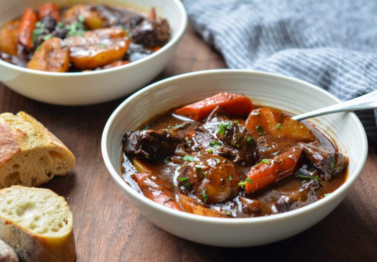

Beef Stew

This classic French beef stew is the ultimate comfort food. After a few hours in the oven,
the meat becomes meltingly tender and enveloped in a rich, deeply flavored sauce.
Ingredients
- 3lbs boneless beef chuck
- 2 teaspoons salt
- 1 teaspoon black pepper
- 3 tablespoons olive oil
- 2 medium onions
- 7 cloves garlic
- 2 tablespoons balsamic vinegar
- 1 1/2 tablespoons tomato paste
- 1/4 cup all purpose flour
- 2 cups dry red wine
- 2 cups beef broth
- 2 cups water
- 1 bay leaf
- 1-1/2 teaspoons dried thyme
- 1 teaspoon sugar
- 4 large carrots
- 1lb small white potatoes
Instructions
- Preheat oven to 325 degrees F.
- Pat the beef dry and season with salt and pepper.
- In a Dutch oven, heat the olive oil on medium-high heat and brown the meat. After a good sear has developed,
transfer the meat to a bowl.
- Add the onions, garlic, and balsamic vinegar and cook while removing the brown bit from the bottom of the pan.
- Add the tomato paste along with the beef juices and sprinkle with the flour. Cook for a minute more.
- Add the wine, beef broth, water, bay leaf, thyme, and sugar. Stir with a wooden spoon, removing any remaining bits from the bottom of the pan and bring to a boil.
- Cover with a lid and braise for 2 hours.
- Remove the pot from the oven and add the carrots and potatoes.
- Cover and place back in the oven for another hour.
- Remove the bay leaf and serve stew warm.